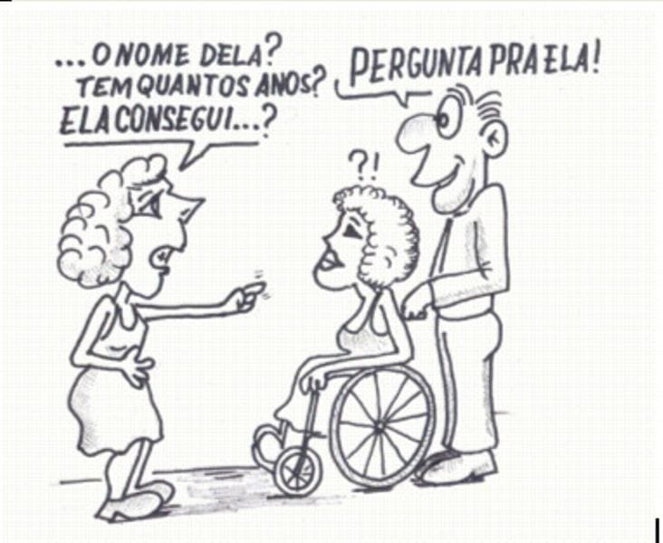

O uso correto de termos ao se referir a pessoas com deficiência (PCD) é essencial para promover respeito e combater o capacitismo,
que é o preconceito contra essas pessoas. Expressões como "aleijado" ou "inválido" são inapropriadas e reforçam estereótipos negativos,
desumanizando as PCD. Além disso, frases como "Nem parece que você tem deficiência" ou "Achei que você era normal" perpetuam a ideia de que pessoas com deficiência não se encaixam
nos padrões de "normalidade" da sociedade.
Para evitar essas atitudes,
é importante sempre colocar a pessoa em primeiro lugar, como "pessoa com deficiência",
e não defini-la apenas pela deficiência. Além disso,
deve-se usar terminologia correta e evitar rótulos simplistas. É fundamental respeitar as preferências individuais,
já que algumas PCD podem se identificar de formas específicas, como no caso de pessoas surdas,
por exemplo, que têm uma identidade cultural associada ao termo. Dessa forma,
a linguagem correta contribui para a inclusão e o respeito.
